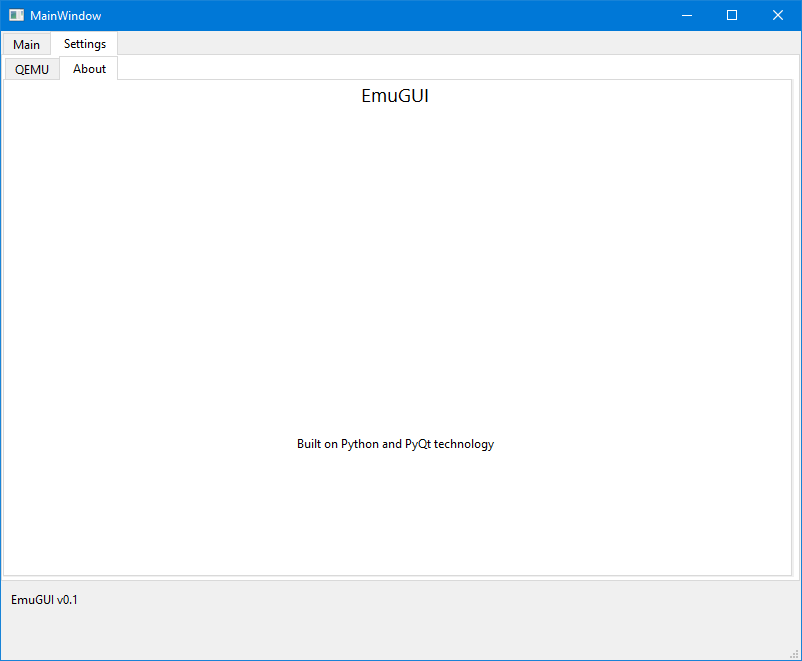

EmuGUI is a program released by Nicolas Lucien in 7th June, 2022. This program serves as a GUI frontend for QEMU. This is how to install it on Windows.
The About window of EmuGUI which is running on Windows 10. (Nicolas Lucien)
Hold on! Is your computer compatible with EmuGUI? Let's check!
| Minimum | Recommended | |
|---|---|---|
| Operating system | Windows 8.1 x64 | Windows 10 Version 21H2 x64 |
| Processor | x64 Dual Core Processor running at 2.6 GHz | x64 Quad Core Processor running at 3.2 GHz |
| RAM | 6 GB | 16 GB |
| Graphics | DirectX 10/OpenGL 2.1 supported | DirectX 12/OpenGL 3.3 supported |
| HDD | 2 GB free space on a hard drive | 20 GB free space on an SSD |
| Additional notes | QEMU must be installed for this to work. | QEMU must be installed for this to work. |
Important: These are only template requirements for getting any VM to run. The real requirements depend on what OS you want to run. Some operating systems won't work with these barebone specifications.
Made by lucien-rowan (aka Nicolas Lucien). (C) 2022 lucien-rowan. All rights reserved.
Link: https://www.youtube.com/watch?v=AOgNqtVw3Y4
Due to copyright, QEMU is not included in EmuGUI, meaning you have to install this first. But if your computer meets the minimum requirements of EmuGUI, it will also run QEMU.
Now we have everything working but you must still check out settings.
This website and its content are licensed under BSD-3 Clause if not stated otherwise. (C) 2022 Nicolas Lucien and EmuGUI contributors. All rights reserved.